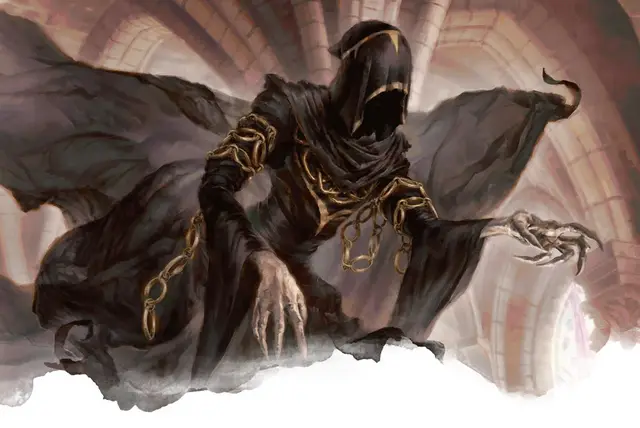

Связанный договором дух
Indentured Spirit
Средняя Нежить, любое мировоззрение

Класс Доспеха 11
Хиты 13 (3к8)
Скорость 0 футов, летая 40 футов (летает)
| мод | спас | ||
|---|---|---|---|
| СИЛ | 7 | −2 | −2 |
| ЛОВ | 13 | +1 | +1 |
| ТЕЛ | 10 | +0 | +0 |
| мод | спас | ||
|---|---|---|---|
| ИНТ | 10 | +0 | +0 |
| МДР | 12 | +1 | +1 |
| ХАР | 11 | +0 | +0 |
Сопротивление урону звук, кислота, огонь, электричество; дробящий, колющий, рубящий от немагических атак
Иммунитет к урону некротическая энергия, холод, яд
Иммунитет к состояниям захват, испуг, истощение, окаменение, опутанность, отравление, очарование, паралич, сбивание с ног
Чувства пассивное Восприятие 11
Опасность 1 (200 опыта)
Бонус мастерства +2
Особенности
Сопротивление урону. звук, кислота, огонь, электричество; дробящему, колющему и рубящему урону от немагических атак.
Бестелесное перемещение. Дух может перемещаться сквозь других существ и предметы, как если бы они были труднопроходимой местностью. Он получает 5 (1к10) урона силовым полем, если заканчивает ход внутри предмета.
Действия
Иссушающее касание. Рукопашная атака оружием: +3 к попаданию, досягаемость 5 фт., одна цель. Попадание: 10 (3к6) урона некротической энергией.
Описание
Те, кто умирают с неоплаченными долгами Синдикату Орзовов, не получают отсрочки. Вместо этого их духи служат Синдикату, пока не выполнят свои обязательства. Иногда это означает существование в качестве связанного контрактом духа в течение многих лет или даже тысячелетий.
Связанный договором дух — это бестелесное существо, облаченное в призрачную чёрную мантию и капюшон, который скрывает любое лицо, которое у него может быть. Цепи висят на его груди и руках как вечный знак его рабства.
Духи орзовов
Для членов Синдиката Орзовов жизнь в качестве духа после смерти может быть даром, а может означать вечное рабство. Процесс отделения души от тела часто добровольно проходят главы старейших и наиболее уважаемых семей олигархии Орзовов, в результате чего изнеженные души думают, что они могут провести остаток вечности, наслаждаясь трофеями своего упадка. Эти духи начинают свою не-жизнь как призраки и используют блок характеристик привидения [ghost] из «Бестиария». Однако со временем они, как правило, теряют нюансы своей личности и становятся карикатурами на самих себя, часто превращаясь в спектров [specter], как описано в «Бестиарии».